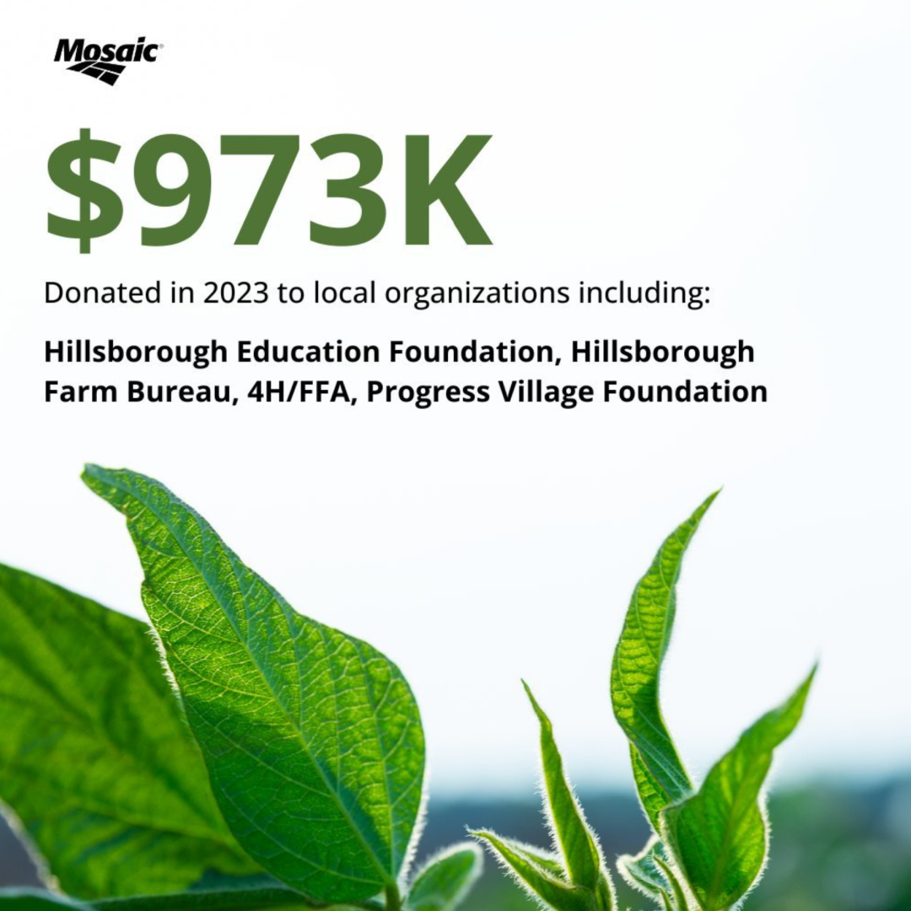
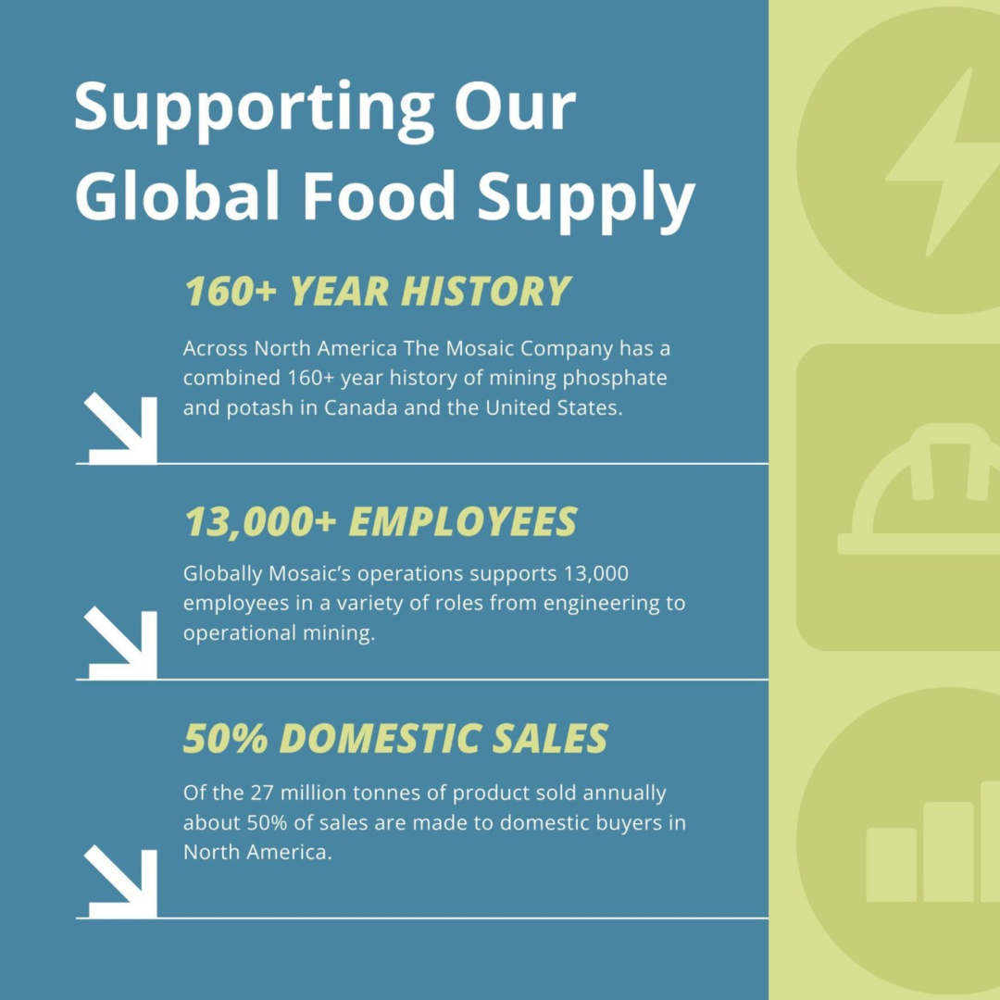

Brand Guidelines Uplift
Mosaic's brand guidelines launched three years ago with no governance behind them, and brand use drifted. I took the existing guidelines and made them easier to use correctly: a simpler logo rule, color guidance and large-format examples that didn't exist before. I rolled the update out to 13,000 employees and vendors, and now oversee brand use company-wide.
Design Lead over all Mosaic brand executions. I updated the guidelines, ran the rollout and review every public-facing asset.
The original guidelines only gave measurements for PowerPoint, letter and A4, and even official external comms drifted off brand. Everything else was guesswork by users and agencies, which meant wrong outputs and more back and forth with vendors. Color had no guidance, and billboards, backdrops and pull-up banners weren't covered.


Three posts from the same channel, before the uplift: three layouts, three logo placements (one missing) and three color treatments.
Logo sizing. A percentage of canvas width replaces fixed measurements, so the logo scales in proportion on any format.
Color. The palette is broad and nobody knew how to combine it, so people used all of it. A 60% neutral, 30% primary, 10% accent rule keeps combinations balanced.
Large formats. Billboards, backdrops and pull-up banners, specced with real-world mockups.
The new logo rule: one formula, a percentage of canvas width, that works on any format.

The color guide: suggested pairings that make balanced combinations easy.
Many real-life applications now live in the guidelines, so teams can see the rules at work. I coordinated translations into Spanish, Portuguese and Simplified Chinese, built the internal comms plan and updated every template.


Built to the new guidelines: the same logo tab, type and call-to-action treatment across billboard, vertical ad and proxy cover.
Everything public-facing goes through me. I check that it looks right and complies with the guidelines, and I fix it when it doesn't, including official external comms. The guidelines are enforced, not just published.
Adopted by 13,000 employees and vendors worldwide, with less friction with vendors. The brand now holds together across every channel.